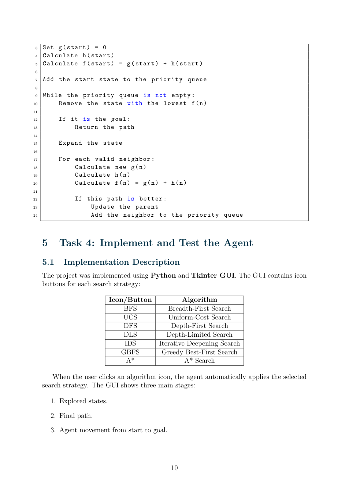
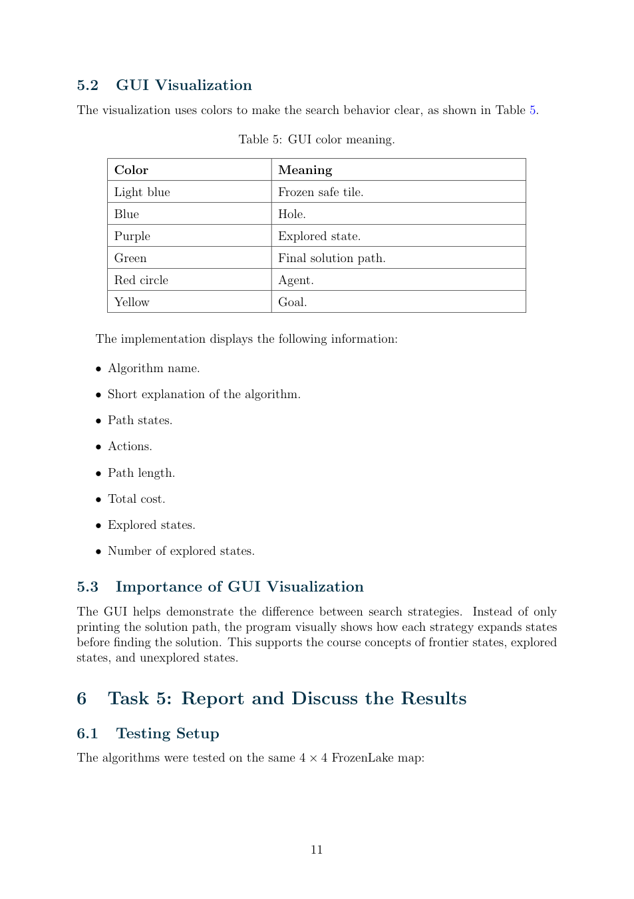

Problem setup
A deterministic 4 × 4 grid is modeled as a search problem with start state 0, goal state 15, and forbidden hole states 5, 7, 11 and 12. Each valid movement has unit path cost.
Search strategies
The supplied report and Python code implement Breadth-First Search (BFS), Uniform-Cost Search (UCS), Depth-First Search (DFS), Depth-Limited Search (DLS), Iterative Deepening Search (IDS), Greedy Best-First Search (GBFS) and A* search. A Manhattan-distance heuristic is used for heuristic-based strategies.
Interactive visualization
The Tkinter application provides controls to select a search algorithm, display explored cells, highlight the path found and animate movement toward the goal. The screenshots below are extracted from the submitted report.


Scope and limitations
This is a discrete search-based planning exercise, not a reinforcement-learning-trained policy or a stochastic real-world robot. The project code is provided for inspection, without claiming independent benchmark results.